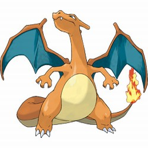

Charizard
Type: Fire / Flying
Attacks:
- Flamethrower
- Dragon Claw
- Fire Spin
Description: Charizard is the final evolved form of Charmander. It is a Fire and Flying-type Pokemon known for its powerful flame-based attacks and ability to fly.
Additional Information about Charizard
Charizard is one of the most iconic and powerful Pokemon. Here are some additional information about this Pokemon:
- Height: 1.7 meters (5 feet 7 inches)
- Weight: 90.5 kilograms (199.5 pounds)
- Ability: Blaze
- Habitat: Mountains and active volcanoes
- Charizard can Mega Evolve into Mega Charizard X or Mega Charizard Y using specific Mega Stones.
Evolution:

Charmander evolves from Charmeleon at level 16.

Charmeleon evolves from Charizard at level 36.

This is the final evolved form of Charmander.